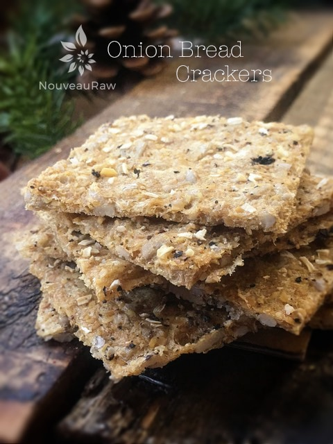
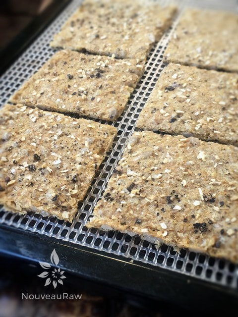
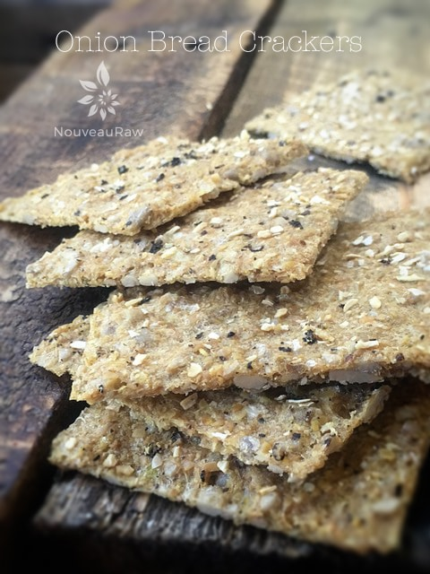
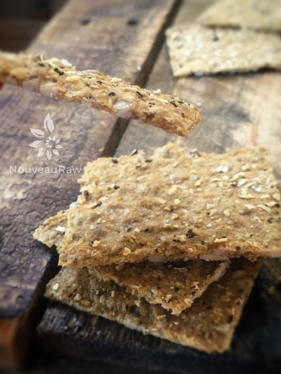

Onion Bread Crackers

Onion Bread Crackers have a rich flavor that is based on the sweet and savory essence of onions. There is no getting around the fact that these are onion crackers. They will bring distinction to any party platter with their unique flavor.
Putting aside the time it takes to dehydrate them… these crackers are quick and easy to make. The other bonus is that the aroma of this onion bread in the dehydrated is amazing. It fills the house with a warm, savory, nose-whiffing aroma that will cause your tummy to start grumbling with anticipation.
This batter can also be used to make crackers or bread. After spreading it on the dehydrator sheets, you can score it into larger pieces and pull it out of the dehydrator when it is nice and pliable, thus making it an awesome bread for sandwiches.
Know your Onions
Since onions are the core ingredient, you want to make sure that you select the right one. Each different type of onion will alter the end flavor of this recipe, so it is important to understand what onions taste like in their raw state.
Vidalia onions, which are milder and sweeter, are by far my favorite ones to use for this recipe. I have also used yellow onions, but they have a bite and are quite assertive when eaten raw. I have also used white onions. They aren’t sweet like Vidalia’s, but they are milder than the yellow onion.
The last type that I have used is the red onion. They, too, are pretty darn assertive and spicy as well. They do add a splash of color to the cracker, though. I have enjoyed this recipe every time that I have made it, regardless of the onion, but I do have my favorites. So don’t be afraid to test out the different types of onions and see which appeals to you the most. I hope you enjoy this recipe. Many blessings, amie sue
- 2 1/2 lbs sweet onions, peeled
- 1 cup (120 g) ground raw sunflower seeds
- 1 cup (130 g) ground golden flax seeds
- 1/2 cup (100 g) cold-pressed olive oil
- 6 Tbsp (150 g) coconut amino
Preparation:
- Place the sunflower seeds and flaxseeds in the food processor, fitted with the “S” blade, and process them to a finer crumble/flour. Pour into a large mixing bowl.
- Put the onions in a food processor and process until small pieces (but not much).
- Add the broken-down onions to the mixing bowl with the ground sunflower seeds and flax seeds.
- Add the olive oil and coconut aminos, stirring well. The flax will absorb the liquid. If any liquid is standing around the edges of the bowl, let it rest a little longer so the flax can do its magic.
- Smooth onto teflex sheets about 1/4″ thick, and score your cracker/bread desired size with a pizza cutter or knife (press gently; you don’t want to cut your teflex sheet.
- Sprinkle salt, perhaps some dried minced onion and or sesame seeds, over the top.
- Dehydrate at 145 degrees (F) for 1 hour, then reduce to 115 degrees for 5 hours, turning over for another 3-4 hours or until dry and crispy.
- Store in the refrigerator in an airtight container.
Culinary Explanations:
- Why do I start the dehydrator at 145 degrees (F)? Click (here) to learn the reason behind this.
- When working with fresh ingredients it is important to taste test as you build a recipe. Learn why (here).
- Don’t own a dehydrator? Learn how to use your oven (here). I do, however, truly believe that it is a worthwhile investment. Click (here) to learn what I use.

Pulled right out of the dehydrator. Ready to be enjoyed.


© AmieSue.com